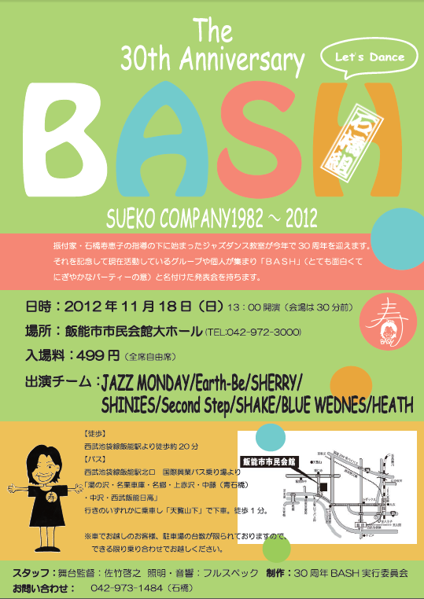

SUEKO COMPANY
The 30th Anniversary BASH
振付家・石橋寿恵子の指導の下に始まったジャズダンス教室が今年で30周年を迎えます。 それを記念して現在活動しているグループや個人が集まり「BASH」（とても面白くてにぎやかなパーティーの意）と名付けた発表会を持ちます。
- 公演日時2012年11月18日（日）13:00 ※開場は開演30分前
- 場所飯能市市民会館 大ホール ＞ 飯能市民会館公式サイト
- チケット料金499円（全席自由）
- 出演チームJAZZ MONDAY / Earth-Be / SHERRY / SHINIES / Second Step / SHAKE / BLUE WEDNES / HEATH
- 舞台監督佐竹 啓之
- 照明・音響フルスペック
- 制作30周年BASH実行委員会
- 問い合わせ石橋 tel 042-973-1484
※チラシ画像をクリックするとPDFファイルで開きます
